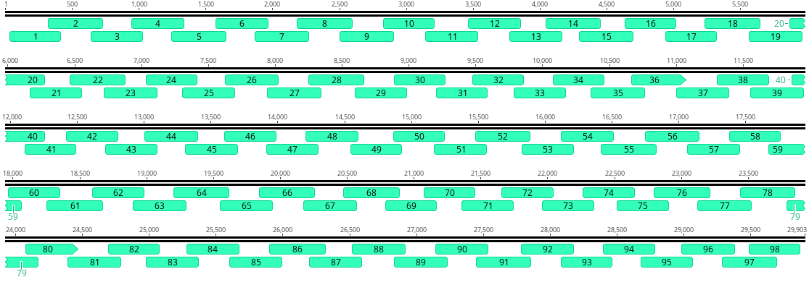
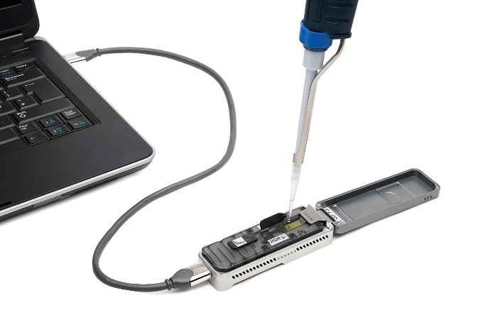
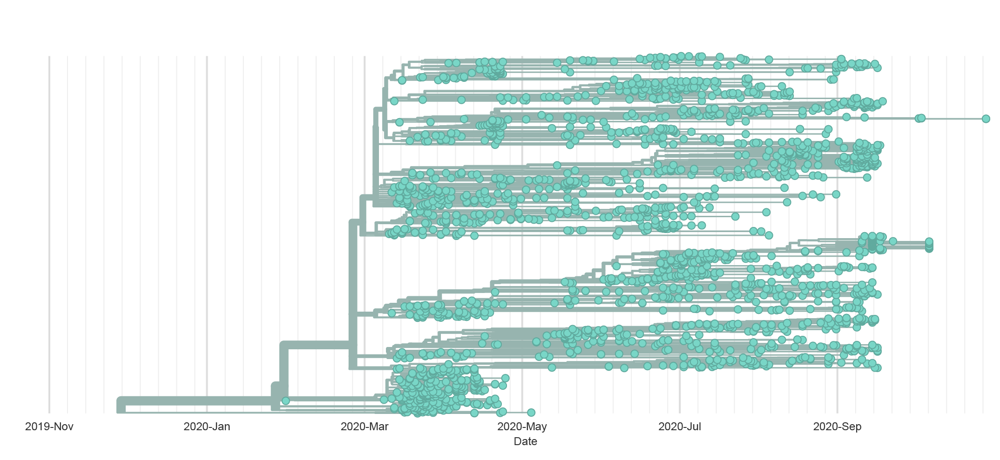
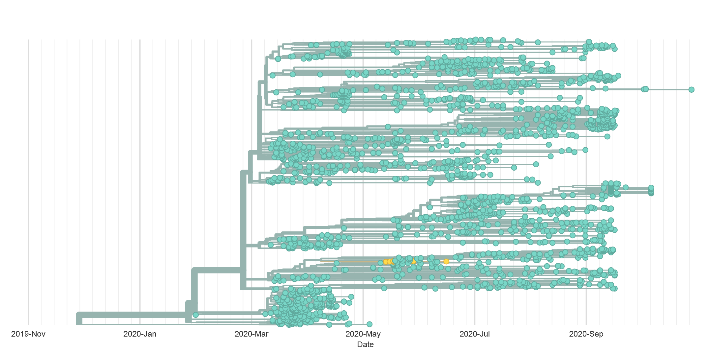
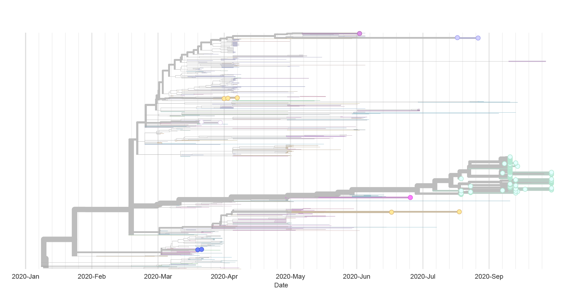

What we have learned about SARS-CoV-2 through genomics
Wisconsin State Laboratory of Hygiene
Kelsey Florek, PhD, MPH
December 10, 2020
Slides live at:
www.k-florek.net/talks

Application of Next-generation sequencing
- Sequencing has become a key tool in understanding the transmission dynamics of disease outbreaks
Use genomics to better understand the transmission and evolution of the SARS-CoV-2 virus.
Inform public health interventions and outbreak investigations.
ARTIC Tiled Amplicon Sequencing Approach

Sequencing Instrumentation
Illumina MiSeq

Oxford Nanopore MinION

D614G Variant
- There is growing evidence that the G variant increases infectivity in vitro and may have been selected for increased transmission in humans
- It has also been suggested that this mutation increases the virus' suceptibility to neutralizing antibodies
D614G Variant

Seneca Foods
- Food processing and distribution – 10 locations in WI
- Workers tested at start of season in June
- First positive case on July 19th
- 28 cases were identified by July 27th
- After mass testing 34 additional cases were identified between July 31st and August 24th
- Sequencing performed on 9 samples but only 6 met quality requirements
Key Takeaways
Brown County
- Genomic data alone is insufficient
- Epidemiological data provides context to results
- Genomic data can be used to highlight or enhance investigations
Seneca Foods
- Sequencing requires quality samples
- Samples with high PCR CT values have a lower total RNA making sequencing difficult
- CT > 30
SARS-CoV-2 in Mink
- November 5th – Ministry of Environment and Food of Denmark announced Denmark would cull their mink population
- Danish National Institute of Public Health
- Reports of Mink to human transmission events
- Mutations in the SARS-CoV-2 Spike protein
- Preliminary reports suggested these mutations could affect Antibody neutralization
- WHO review concluded these mink-associated mutations are not a higher risk to humans
SARS-CoV-2 in Mink – H69/V70 deletion (yellow)

SARS-CoV-2 in Mink – Y453F (yellow)
SARS-CoV-2 in Mink – I692V (yellow)
SARS-CoV-2 in Mink – M1229I (yellow)

Key Takeaways
- Evidence of Mink / human transmission in WI
- The mutations associated with the Denmark mink outbreak do not appear to increase the risk to humans
- The combination of mutations do not appear in any samples sequenced so far
Wisconsin Correctional Facilities
- As of December 9th the Wisconsin Department of Corrections reports:
- more than 9,400 positive cases
- 8 facilities with more than 500 cases
- 4 facilities with more than 100 active cases
- WSLH has completed sequencing on more than 200 samples
Wisconsin Correctional Facilities

Summary
- SARS-CoV-2 genomics is a powerful tool that can help us better understand the pandemic
- WSLH has increased sequencing capacity to address outbreaks and provide surveillance
- If you have a sample/s that are of interest please let us know we would be happy to work with you to get them sequenced